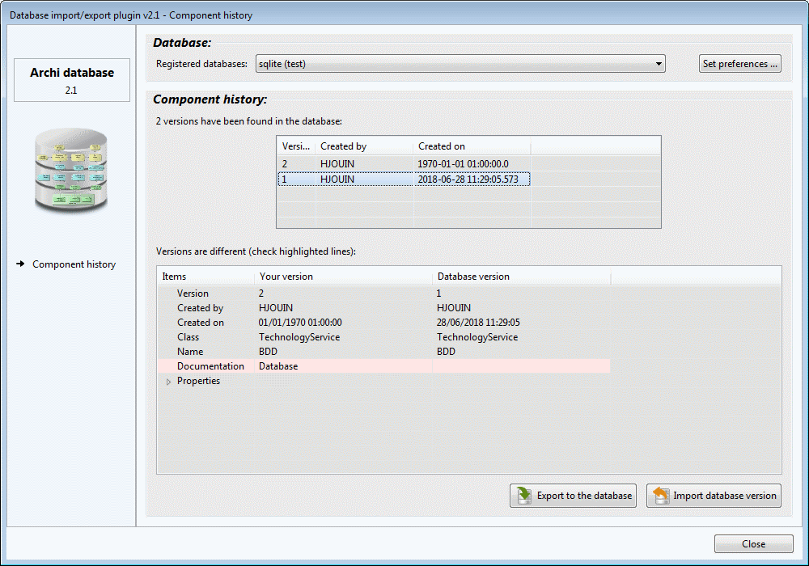

Components history
It is possible to gather any component's history in the database by selecting the get history option in the context menu (right click).

It is possible to get the history from any database declared in the preference page:
- Selecting a specific version will compare this version to the one in the current Archi model. All the differences will be highlighted in red.
- If the current version is different from the latest version in the database, then it will be possible to export the current version to the database using the Export to the database button.
- If the selected database version is different from the current version, it will be possible to replace the current version by the selected version in Archi using the Import database version button.